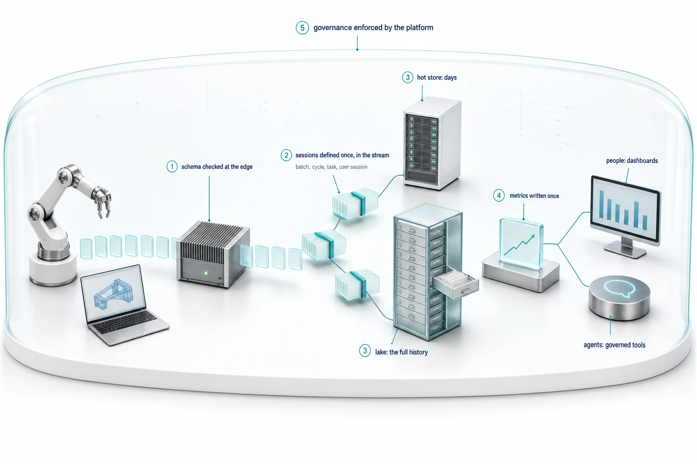
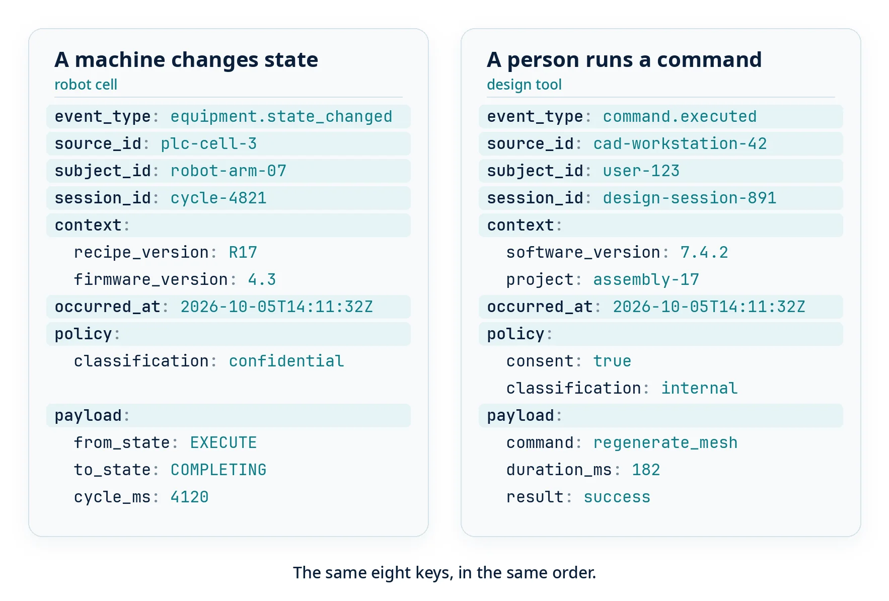

One Pipeline for Machines and People
By Alexander Chernov. First published on LinkedIn, 2026-10-06. Read the original.
Part 1 of three on machine and user telemetry. This part is the pipeline. Part 2 is how much of the data to keep, and Part 3 is what to train on it.
A machine’s state change and a person’s command can share one event contract, and in 2026 they belong in the same pipeline. A reactor entering a hold, a robot arm finishing a pick, a wafer carrier docking at a load port and an engineer running a command in a design tool each produce a small, structured record of something that happened, with an identity, a context and a time. The pipeline that serves both has five properties. The event schema is a contract checked at the edge. Sessions are defined once, in the stream. A hot store holds days while a lake holds the history. Metrics are written once and served to people and agents alike. Governance is part of the platform rather than a review after it.
I built the user half of this at Citigroup between 2016 and 2020. Events from web and desktop applications and from the servers ran through Kafka, Logstash and Elasticsearch, with Kibana on top, at up to about a terabyte a day, and the platforms’ business leadership and support teams read the results. My equipment work comes from semiconductor automation, with FOUP transport and SECS/HSMS equipment integration, from GxP manufacturing execution systems, and most recently from a perception decision layer running live on ROS 2 and the Vehicle Signal Specification. The stages of the 2016 pipeline still hold. Their implementations and governance boundaries have changed, and the changes apply to a production line as much as to a software product.

The event is a state change with its context
On the equipment side, the useful unit is a state change with its context. OPC UA servers expose it through their information model, MQTT with Sparkplug publishes it with a declared payload, semiconductor tools report it as SECS/GEM collection events and alarms, and robots on ROS 2 publish it on topics that rosbag2 records to MCAP files. A temperature reading on its own says little. The same reading attached to an equipment id, a batch, a recipe version and a PackML state says what the machine was doing, and that is what every later question needs. My earlier article on 100,000-device estates covered how an edge layer turns hundreds of tags into one contextualized observation, and why waveforms and images belong in object storage with only a pointer in the stream.
On the user side, the same rule applies. In a design or engineering application the event is a command, not a page view. It carries the user, the product version, its timings, and whether the user consented to collection.
Both kinds of event share one envelope: what produced it, what it was doing, which version of the software, recipe or firmware was running, and when. A state change on a robot cell and a command in a design tool fit the same keys.

Designing that envelope once is the first decision, and every later stage depends on it.
The schema is a contract checked at the edge
The most expensive telemetry failures are silent. A client release renames a field, the events keep flowing, and the problem appears weeks later as a dip in a dashboard that someone has to explain. The fix is structural. Every event is validated against a versioned schema in a registry at the point of ingest, and an event that fails is rejected or quarantined there instead of being discovered downstream.
Equipment telemetry makes this easier, because industrial protocols already declare their data. A Sparkplug device publishes a birth certificate listing every metric it will send, and an OPC UA server carries its own information model. The edge gateway checks incoming data against that declaration and against the registry. It also buffers when the site link drops, so a network outage becomes a delay rather than a gap. For user telemetry, the collector behind the client SDK plays the same role, with OpenTelemetry for the backend services.
The edge is also where data that must not travel is removed. For users, that is personal data and anything collected without consent. For equipment, it is operator identity, and often recipe parameters that a manufacturer treats as intellectual property.
Sessions are defined once, in the stream
A single event rarely answers a question. Cycle time, micro-stops, a recurring alarm sequence and a phase that runs long only on one recipe version are properties of a run, not of an event. The equipment session is a batch phase, a machine cycle, a robot task or a shift. The user session runs from opening a design to closing it, and its questions have the same form: command latency, repeated sequences and abandoned workflows.
Logstash transformed events one at a time. Sessions, deduplication and repeated sequences need state across events, which is what a stateful stream processor such as Apache Flink provides. Where the definition lives matters more than the engine. When the session is defined once, in the stream, every dashboard, model and agent downstream uses the same one. When each consumer defines its own, they disagree, and the disagreement gets mistaken for a finding.
This applies to canonical sessions. Analysts still derive their own windows on top of them, such as a rolling half hour or an incident interval, without redefining the session itself.
Days in a hot store, history in a lake
In 2016 Elasticsearch did two jobs: it answered what happened in the last hour, and it held the history. Those jobs are better separated. A hot store, either a search index or a time-series database, holds days of data for operational questions such as which line is down, which release is crashing, or what this user just did. An open table format such as Apache Iceberg on object storage holds the full history as the system of record, readable by every query engine.
Replay is what makes the lake worth having. When the definition of a micro-stop changes, or a new model needs three years of cycle data, the history is rebuilt from the lake rather than collected again from the machines.
Metrics written once, served to people and agents
The 2016 consumers were people reading Kibana. Leaders now read metrics defined once in a transformation layer such as dbt, not ad hoc index queries. For equipment, those metrics are overall equipment effectiveness, cycle time by recipe version, alarm rate by firmware version and mean time between failures. For users, they are active users and retention, command latency percentiles per release, crash rate, and how often users repeat the same sequence of commands.
Each layer owns one kind of meaning. The edge owns the schema and privacy, the stream owns state and sessions, the lake owns history and replay, and the metric layer owns analytical meaning, such as equipment effectiveness and retention, computed from the stream’s sessions.
The new consumer is an agent. A maintenance agent asks which machines are drifting, a customer-success agent asks which accounts are using the product less, and an in-product assistant asks which sequence a user keeps repeating. Each one gets a tool over the governed metrics, served through the Model Context Protocol, and not a connection to the raw tables. The agent then reads the same number as the leadership dashboard. It is bound by the organization’s definitions, not only by its permissions. A tool that bypasses the metric layer becomes a second, unreviewed path to the data, and two paths eventually give two answers.
Governance is a property of the platform
Usage data about identified people is personal data, and production data in a regulated plant is a record that must stay attributable and intact. Both need the same platform properties: a catalog that says what each dataset is, row and column access control, lineage from every metric back to its events, quality checks on every load, and an audit trail of who read what. These properties follow the data through every layer. A session inherits the access rules and lineage of its events, a metric inherits them from its sessions, and an agent’s tool inherits them from the metric. A restriction set on a raw event therefore still holds when an agent asks a question three layers up.
Part 2 takes up the question this pipeline raises at scale: how much of the data is enough, and when it stops being valid. Part 3 covers what to train on it.
Sources. At 100,000 Devices, Throughput Is the Easy Part: https://www.linkedin.com/pulse/100000-devices-throughput-easy-part-alexander-chernov-tz7bc/ · At 100,000 Devices, Nothing Fails at the Average: https://www.linkedin.com/pulse/100000-devices-nothing-fails-average-alexander-chernov-cdcec/ · OPC UA (IEC 62541), online reference: https://reference.opcfoundation.org/ · MQTT Version 5.0, OASIS Standard: https://docs.oasis-open.org/mqtt/mqtt/v5.0/mqtt-v5.0.html · Sparkplug specification: https://sparkplug.eclipse.org/specification/ · Sparkplug 3.0 published as ISO/IEC 20237:2023: https://newsroom.eclipse.org/node/39754 · SEMI E5, SECS-II message content: https://store-us.semi.org/products/e00500-semi-e5-specification-for-semi-equipment-communications-standard-2-message-content-secs-ii · SEMI E30, Generic Equipment Model (GEM): https://store-us.semi.org/products/e03000-semi-e30-specification-for-the-generic-model-for-communications-and-control-of-manufacturing-equipment-gem · SEMI E37, High-Speed SECS Message Services (HSMS): https://store-us.semi.org/products/e03700-semi-e37-high-speed-secs-message-services-hsms-generic-services · ISA-88 batch control standards: https://www.isa.org/standards-and-publications/isa-standards/isa-88-standards · ISA-TR88.00.02-2022, Machine and Unit States (PackML): https://www.isa.org/products/isa-tr88-00-02-2022-machine-and-unit-states-an-imp · COVESA Vehicle Signal Specification: https://covesa.github.io/vehicle_signal_specification/ · rosbag2 MCAP storage plugin: https://github.com/ros2/rosbag2/tree/rolling/rosbag2_storage_mcap · MCAP: https://mcap.dev/ · OpenTelemetry: https://opentelemetry.io/docs/ · Apache Flink: https://flink.apache.org/ · Apache Iceberg: https://iceberg.apache.org/ · dbt: https://docs.getdbt.com/docs/introduction · Model Context Protocol specification: https://modelcontextprotocol.io/specification
#DataEngineering #IndustrialIoT #Telemetry #Manufacturing #Robotics #OPCUA #SmartManufacturing #ApacheFlink #ApacheIceberg #AgenticAI
© 2026 Alexander Chernov. All rights reserved. First published on LinkedIn, which remains the canonical version; this page is a reprint by the author.